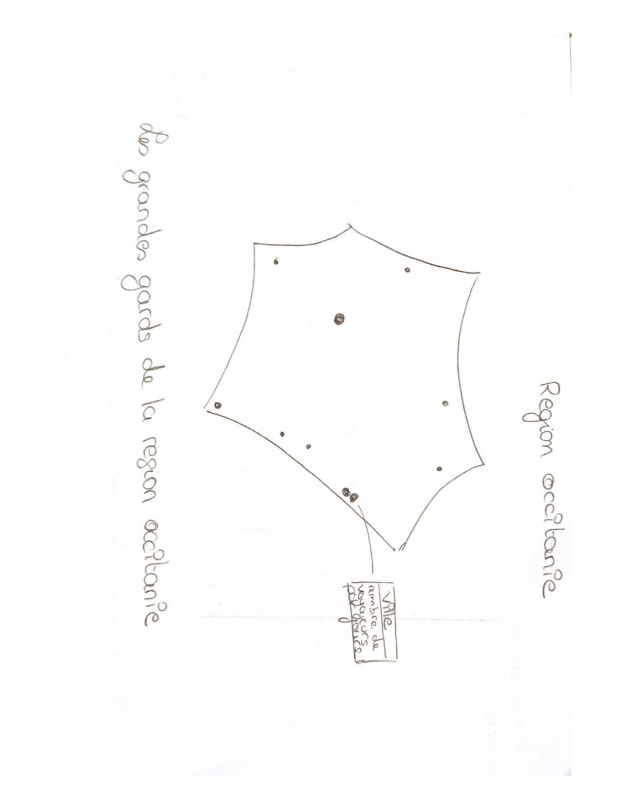
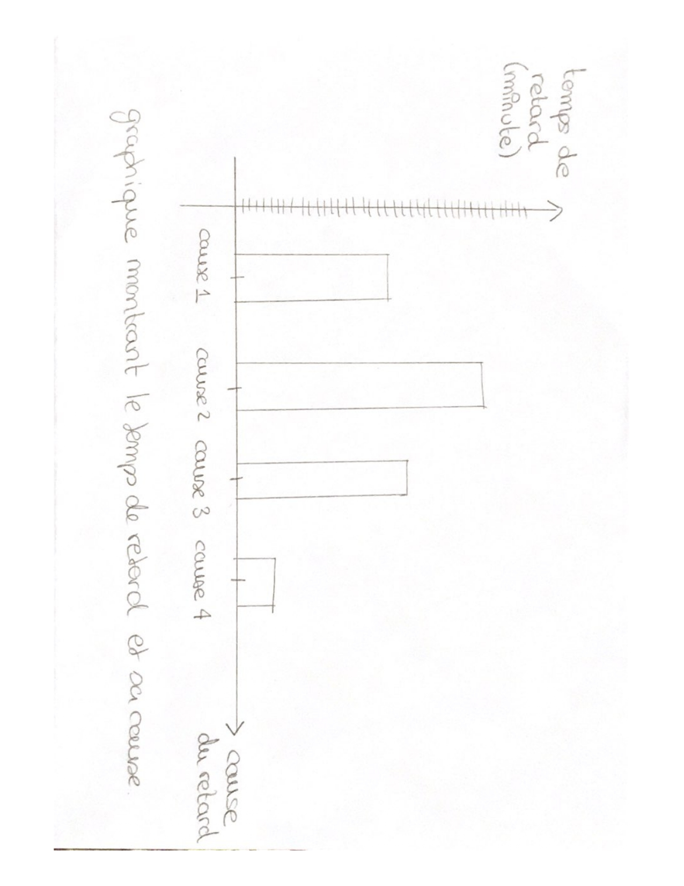
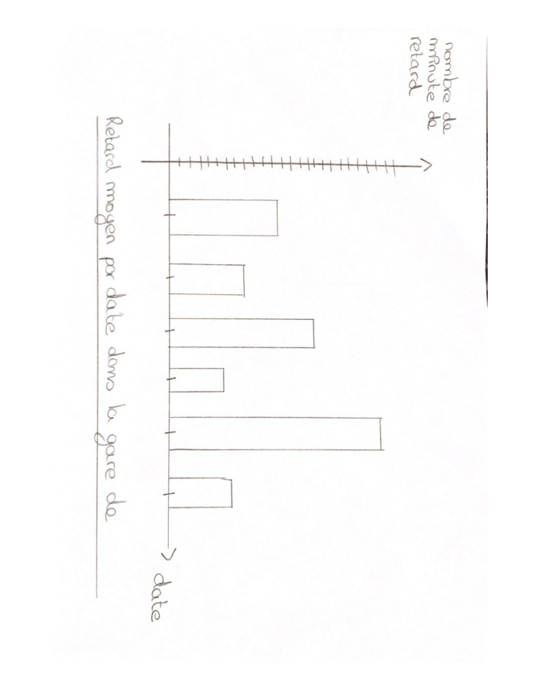

gantt
dateFormat DD-MM
title Roadmap du projet
section Développement
Choix du sujet d'etude(Bastien) :des1, 17-09,1d
Recherche de bases de données(Néo) :des2, 24-09,3w
compte rendu de l'avancé du projet(Sofia) :des3, 24-10,2d
section creation
Créer le site(Mohammed) :des4, 27-10, 7d
Créer la carte interactive(Néo) :des5, after des4, 7d
Créer les deux graphiques(Sofia) :des6, after des5, 7d
Afficher les graphes/carte(Mohammed) :des7, after des6, 3d
Exporter les graphes/carte(Bastien) :des8, after des7, 3d
Mise en forme du site(Sofia) :des9, after des8, 7d
section présentation
Rendu du projet final(Bastien) :des10, 10-12,1d
Oral(Tout le monde) :des11, 12-12,1d
le retard moyen des trains (en région Occitanie)
projet
GitHub repository: https://github.com/Bastien2003/Projet.git
Group composition:
- Ben-Atmane Sofia (Numéro étudiant : 22405102)
- Regnat Néo (Numéro étudiant : 22119548)
- Maggi Bastien (Numéro étudiant : 22510856)
- Étudiant 4 (Numéro étudiant)
1. Description du projet
Notre projet vise à analyser les retards moyens des trains circulant dans les gares (de la région Occitanie). L’objectif est de mieux comprendre la répartition et les causes des retards selon différents critères : le lieu, le moment de la journée ou encore la période de l’année.
Nous concentrons notre étude sur les principales gares de la région, telles que Montpellier, Toulouse, Carcassonne ou Béziers, afin d’obtenir une vision représentative du trafic ferroviaire en Occitanie.
Les résultats de cette analyse seront présentés à travers plusieurs visualisations interactives, notamment :
une carte interactive permettant de localiser les gares et d’afficher des informations associées (comme le nombre de voyageurs par an) ;
des graphiques illustrant les tendances des retards selon le jour, l’heure ou le mois, ainsi que les principales causes de ces retards.
Créations prévues
- Carte interactive des plus grandes gares sélectionnées. En cliquant sur une gare, on obtient le nom et le nombre de voyageurs par an.
- Graphique en barres montrant le retard moyen des trains selon le jour de la semaine, l’heure du jour, le mois ou l’année pour chaque gare sélectionnée (~10 gares).
- Graphique en barres mettant en relation le nombre moyen de retards avec les différentes causes.
Résultats espérés :



Technologies / Packages utilisés
- Python :
pandas,numpy,matplotlib,seaborn,folium(pour cartes interactives)
- Quarto : génération de rapports et visualisations
- HTML : création du site web
Architecture minimale
- Dossier
data/: fichiers de données brutes
- Dossier
scripts/: scripts de traitement des données
- Dossier
roadmap/: README.qmd
- Fichiers principaux :
edition.py: fonctions de création des cartes et graphiques
visualization.py: fonctions de visualisation
rapport.txt: analyse et interprétation des données
Pipeline de codage
- Charger les données
- Nettoyer et transformer les données
- Produire les visualisations
- Documenter les résultats dans les rapports